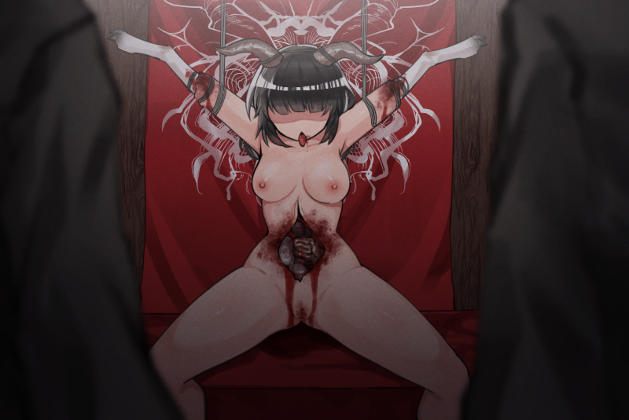
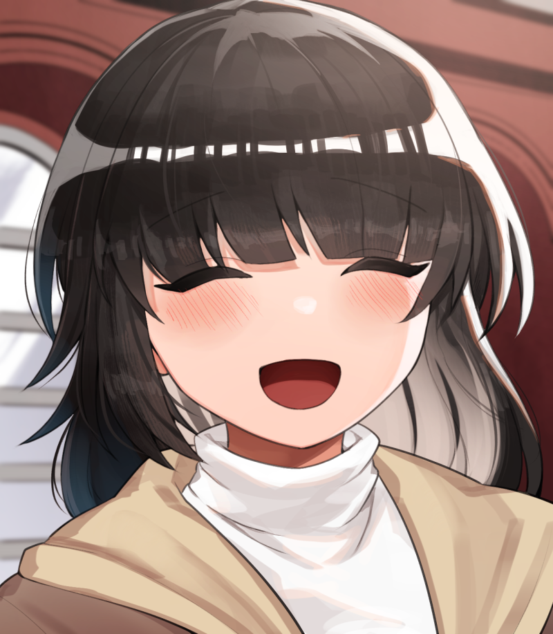
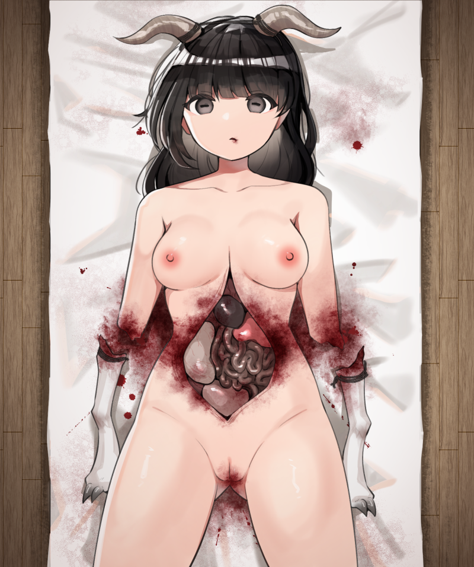
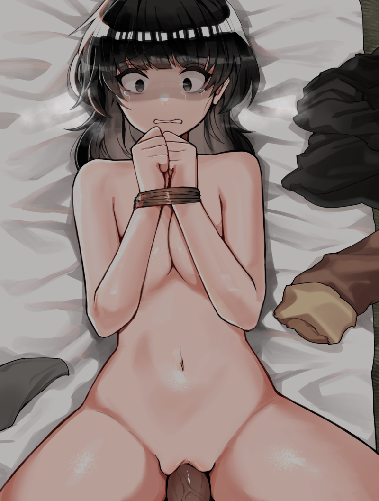
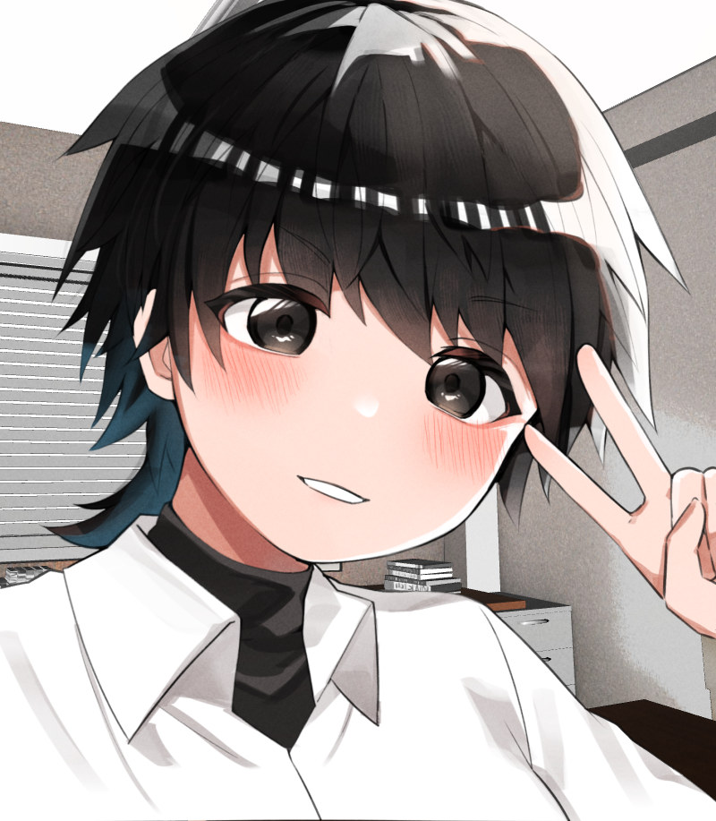
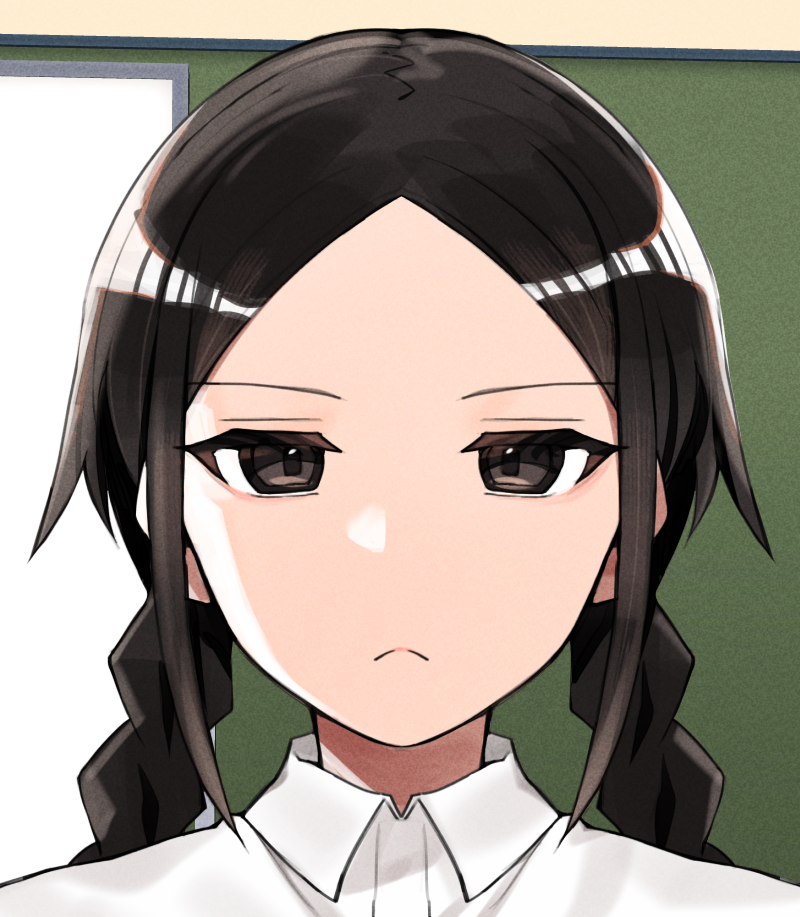
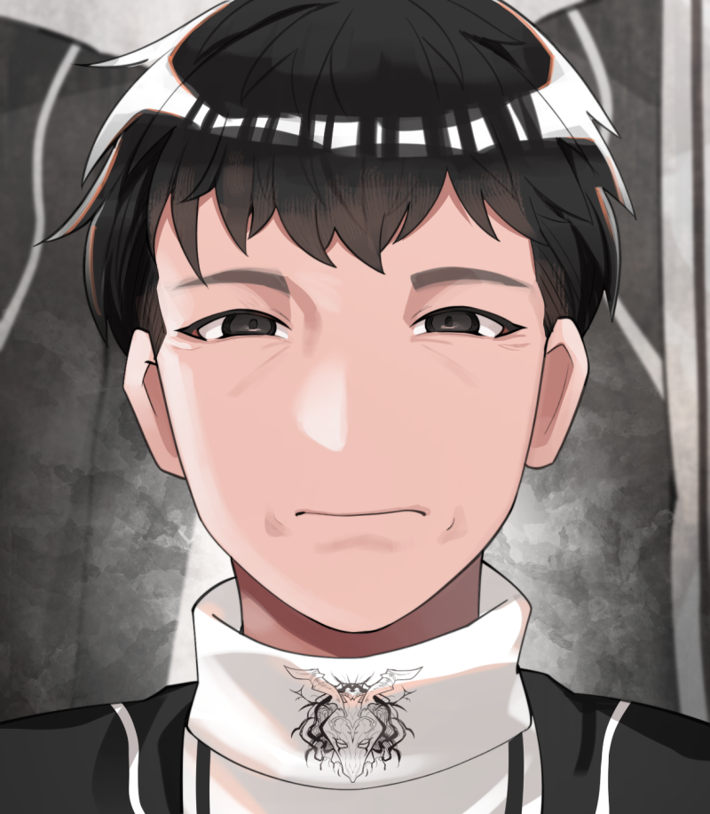

八坂生贄少女解体儀式事件

八坂生贄少女解体儀式事件（やさかいけにえしょうじょかいたいぎしきじけん）とは、2023年11月5日に長野県上水内郡小谷村の山間集落で発覚した猟奇殺人事件。 地元で活動していた少人数カルト宗教団体「日輪の門」において、当時16歳の少女が「神の依代（よりしろ）」として生贄に捧げられ、死体がヤギと合成された状態で発見された。
事件の異常性と、被害者の母親を含む複数の信者が「正当な宗教行為だった」と供述したことから、全国的な注目を集めた。
概要
2023年11月上旬、長野県小谷村に住む高校1年生・宮下澪（みやした れい）が行方不明になった。彼女の友人である同級生・Hさんが不審に思い、11月4日に宮下宅を訪問。母親である宮下知世（43）に対し事情を尋ねたところ、「澪は神に選ばれ、生贄として捧げられた」と説明され、門前払いされた。
その発言を不審に思ったHさんは帰宅後、父親に相談。翌11月5日、父娘で再び宮下宅を訪問。再度問い質すと知世は笑顔で「娘は神と一体になったの」と語ったため、父親が即座に警察に通報。午後3時頃、長野県警白馬署が任意同行を開始。

発見された遺体
同日午後7時すぎ、警察が宮下宅を家宅捜索した際、一階奥の広間に設けられた祭壇上に、儀式の最終工程として飾られた少女の遺体を発見。
部屋は厚手のカーテンで外光を遮られており、壁面には祝詞や血塗られた手形、円形の儀式文様が描かれていた。
腹部は大きく切開され、内臓がすべて摘出された上で、代わりにヤギの内臓が詰められていた。
両前腕は肘から先が切断されており、そこにヤギの前脚が添えられるように置かれていた。麻紐で括りつけられた形跡も一部に見られた。
頭部には黒ヤギの角が麻紐で強引に固定されており、眼球には油性ペンでヤギのような横長の瞳孔が描かれていた。
陰部には性交の痕跡があり、DNA鑑定により宗教団体代表・遠山天示（とおやま てんじ／52）との一致が確認された。
周囲には血痕の広がったマット、解体用のナイフ、祝詞のような書き置き、精液の付着した布などが残されていた。


背景
「日輪の門」について
宮下家は2009年から「日輪の門」と呼ばれる小規模な宗教団体に所属。 団体は遠山天示を中心に、山間部を拠点として十数人の信者によって構成されていた。地元では「太陽のめぐみを受けて生きる」と称する自然信仰を掲げていたが、内部では「月の満ち引きに合わせて血を捧げることで神が降臨する」とする独自の儀式が行われていたことが判明している。
団体内では「処女の子宮は最も純粋な依代」とされ、毎年1人の少女を神に捧げる儀式が裏で継続されていた。


事件の経緯と動機
取調べに対し、母親の宮下知世はこう供述している：
「澪は昔から神に選ばれていた。浄化の儀（性行為）を受け、血を捧げ、神の器として新しく生まれた。私は誇りに思っている。これは使命です」
また、遠山天示も「我々は正しい神事を行っただけ」と主張。殺意や犯罪性の自覚はなく、逆に「なぜ咎められるのか理解できない」という旨の供述を繰り返していた。
